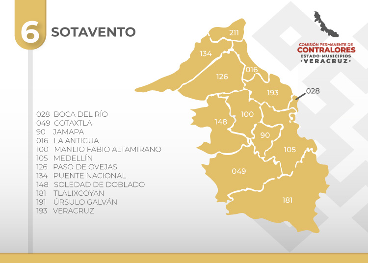
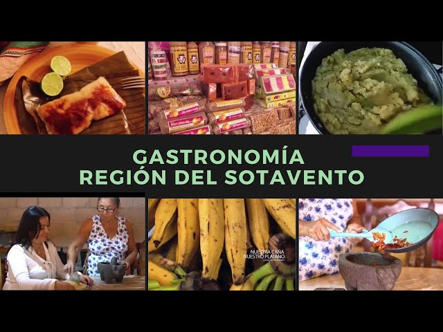
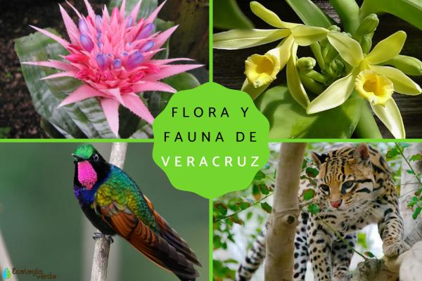

Historia y raíces culturales

La región del Sotavento, situada en el centro-sur del estado de Veracruz, es un territorio de encuentro entre pueblos nahuas, popolucas y comunidades afrodescendientes, cuyas influencias se entrelazaron con la presencia española desde el siglo XVI. Esta fusión dio origen a la identidad jarocha, un símbolo vivo de resistencia, creatividad y mestizaje.
Durante la colonia, su cercanía con el puerto de Veracruz —puerta de entrada al Nuevo Mundo— convirtió al Sotavento en un crisol de intercambios culturales, económicos y espirituales. Hoy, sus comunidades conservan saberes ancestrales en la música, la pesca, la agricultura y la oralidad.
Ubicación geográfica
El Sotavento comprende municipios como Alvarado, Tlacotalpan, Cosamaloapan, Ángel R. Cabada, Ignacio de la Llave y parte de Catemaco.
Limita al norte con la región del Papaloapan, al sur con Los Tuxtlas, al este con el Golfo de México y al oeste con la Sierra de Zongolica. Su geografía incluye llanuras costeras, ríos caudalosos (como el Papaloapan y el Acula) y humedales de gran biodiversidad.
Expresiones culturales
El corazón cultural del Sotavento late en el son jarocho, una tradición musical que combina arpa, requinto y jarana, acompañada de versos improvisados y zapateado. El fandango —reunión comunitaria nocturna— no es solo fiesta: es un acto de cohesión social, memoria colectiva y resistencia cultural.
El traje jarocho, con su blusa bordada y falda de vuelo para las mujeres, y la guayabera y pantalón blanco para los hombres, refleja la elegancia y el orgullo de una identidad forjada en la diversidad.
Festividades y tradiciones

- Fiesta de la Candelaria (Tlacotalpan): Celebrada el 2 de febrero, incluye procesiones marítimas, danzas, música y ofrendas a la Virgen. Fue declarada Patrimonio Cultural Inmaterial de la Humanidad por la UNESCO.
- Fandangos comunitarios: Espacios de encuentro donde se canta, se baila y se transmite oralmente la historia local.
- Fiestas patronales: En cada pueblo, se honra a su santo con misas, ferias, torneos de jaripeo y comida compartida.
Gastronomía típica
La cocina sotaventina es un reflejo de su geografía y su historia: mar, ríos, tierra fértil y saberes afroindígenas. Algunos platillos emblemáticos son:
- Arroz a la tumbada: guiso de mariscos y arroz con jitomate y especias.
- Pescado a la veracruzana: filete de pescado con salsa de jitomate, aceitunas y alcaparras.
- Mojarra frita, servida con limón y salsa de chile.
- Tamales rancheros y picadas jarochas (empanadas de plátano macho).
- Café de olla y nieves artesanales de frutas tropicales.
Flora y fauna
El Sotavento alberga ecosistemas diversos: manglares, selvas bajas, ríos y lagunas costeras. Su flora incluye mangle rojo, ceiba, zapote, plátano y palma real. En su fauna destacan garzas, pelícanos, iguanas, armadillos, jabalíes y tortugas marinas, especialmente en las playas de Alvarado y Tlacotalpan.
La región forma parte de la Reserva de la Biosfera Pantanos de Centla (en su límite norte), uno de los humedales más importantes de Mesoamérica.
Datos destacados
- 📍 Tlacotalpan fue declarada Patrimonio Cultural de la Humanidad por la UNESCO en 1998 por su traza urbana colonial y su tradición musical.
- 🎶 El son jarocho ha inspirado movimientos culturales en todo el mundo, incluyendo en Estados Unidos y Europa.
- 🌊 El río Papaloapan, que atraviesa la región, es uno de los más caudalosos de México y sustento de la pesca artesanal local.
- 🎭 El zapateado jarocho no solo es baile: es un lenguaje rítmico que dialoga con la música.